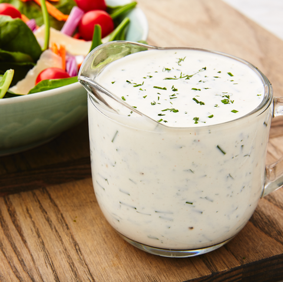

Potato Salad

There’s no need to buy Ranch seasoning packets or bottled versions because this homemade ranch dressing is totally easy to make from scratch.
Ingridients
-
3 tablespoons mayonnaise
-
2 tablespoons sour cream
-
1 teaspoon champagne or white vinegar
-
1 clove garlic pressed or finely minced
-
1 tablespoon chopped chives
-
1 tablespoon Italian parsley minced
-
1 teaspoon kosher salt
-
1/2 teaspoon freshly ground black pepper
-
1/2 teaspoon dried dill
-
1/4 teaspoon onion powder
-
Pinch of cayenne pepper
Steps
-
Mix all of the ingredients together in a small bowl.
Add more buttermilk for desired consistency. Refrigerate until ready to serve.
Back to Home Page